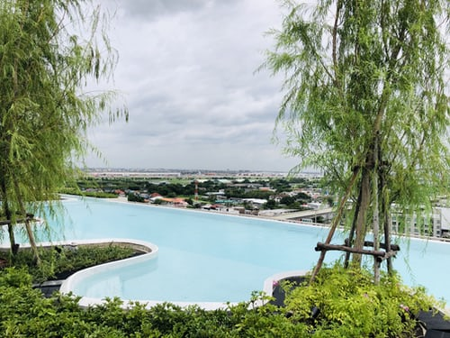
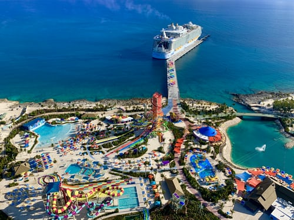
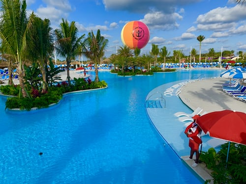

First
BAHAMAS
The Bahamas (/bəˈhɑːməz/ (About this soundlisten)), known officially as the Commonwealth of The Bahamas,[12]
is
a country within the Lucayan Archipelago of the West Indies in the Atlantic. It takes up 97% of the Lucayan
Archipelago's land area and is home to 88% of the archipelago's population. The archipelagic state consists
of
more than 700 islands, cays, and islets in the Atlantic Ocean, and is located north of Cuba and northwest of
the
island of Hispaniola (split between Haiti and the Dominican Republic) and the Turks and Caicos Islands,
southeast of the US state of Florida, and east of the Florida Keys. The capital is Nassau on the island of
New
Providence. The Royal Bahamas Defence Force describes The Bahamas' territory as encompassing 470,000 km2
(180,000 sq mi) of ocean space.
HOTELS IN BAHAMAS



Climates in Bahamas
\
According to the Köppen climate classification, the climate of The Bahamas is mostly tropical savannah climate
or Aw, with a hot and wet season and a warm and dry season. The low latitude, warm tropical Gulf Stream, and low
elevation give The Bahamas a warm and winterless climate.[73]
As with most tropical climates, seasonal rainfall follows the sun, and summer is the wettest season. There is
only a 7 °C (13 °F) difference between the warmest month and coolest month in most of the Bahama islands. Every
few decades low temperatures can fall below 10 °C (50 °F) for a few hours when a severe cold outbreak comes down
from the North American mainland, however there has never been a frost or freeze recorded in the Bahamian
Islands. Only once in recorded history has snow been seen in the air anywhere in The Bahamas, this occurred in
Freeport on 19 January 1977, when snow mixed with rain was seen in the air for a short time.[74] The Bahamas are
often sunny and dry for long periods of time, and average more than 3,000 hours or 340 days of sunlight
annually. Much of the natural vegetation is tropical scrub and cactus and succulents are common in
landscapes.[75]
Tropical storms and hurricanes occasionally impact The Bahamas. In 1992, Hurricane Andrew passed over the
northern portions of the islands, and Hurricane Floyd passed near the eastern portions of the islands in 1999.
Hurricane Dorian of 2019 passed over the archipelago at destructive Category 5 strength with sustained winds of
298 km/h (185 mph) and wind gusts up to 350 km/h (220 mph), becoming the strongest tropical cyclone on record to
impact the northwestern islands of Grand Bahama and Great Abaco.[76]